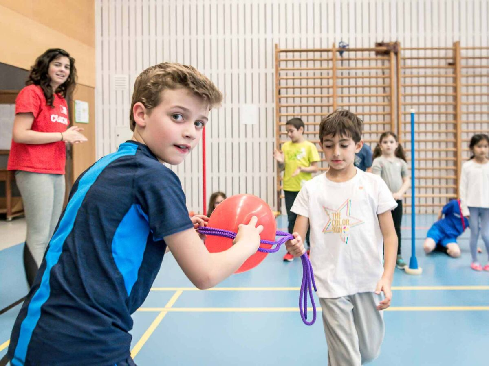
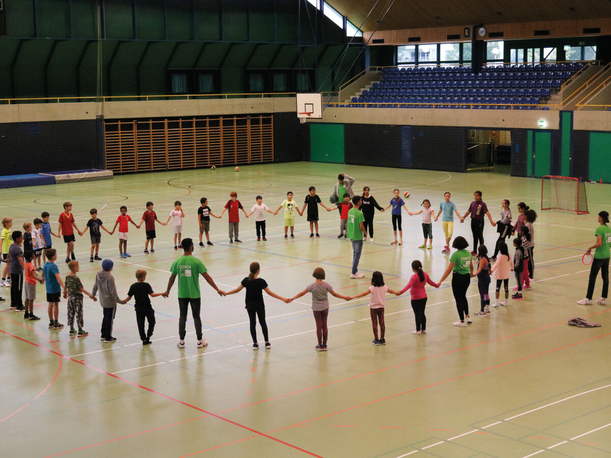
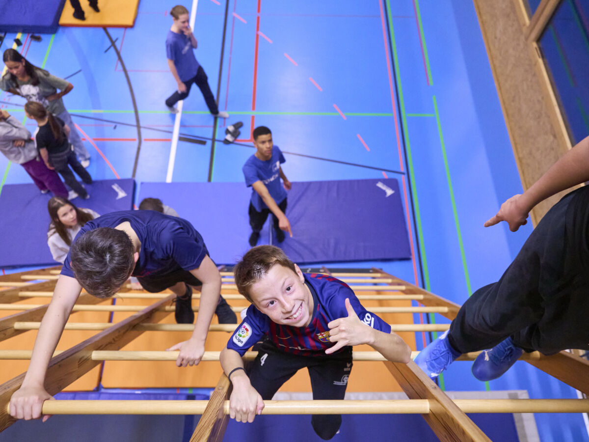

Mes activités chez IdéeSport
Accompagner, encadrer et faire grandir les jeunes
En tant que Seniorcoach, je coordonne l’équipe de juniorcoaches, j’organise les activités sportives et je veille à ce que chaque soirée ou événement se déroule dans un cadre sécurisé, inclusif et motivant pour les jeunes.
- Planification et animation d’activités sportives adaptées aux différents publics.
- Encadrement et soutien des juniorcoaches sur le terrain.
- Gestion de l’ambiance, prévention des conflits et promotion du respect.

🏐 OpenSunday – Yverdon-les-Bains
Au sein du projet OpenSunday organisé par IdéeSport, j’occupe le rôle de Seniorcoach, un poste de coordination et d’encadrement dans un environnement sportif et éducatif. Mon rôle consiste à planifier et animer les activités sportives du dimanche matin, en garantissant la sécurité, l’inclusion et le bon déroulement des événements.

🏃♂️ ActiveWeek – La Poste
Dans le cadre du programme ActiveWeek organisé par IdéeSport, j’ai exercé le rôle de Seniorcoach durant une semaine d’activités sportives destinées aux enfants de l’école primaire. J’ai participé à la planification et à l’animation des journées, tout en encadrant les juniorcoaches et en veillant au bon déroulement des activités. Ce poste m’a permis de développer mes compétences en leadership, gestion d’équipe et communication pédagogique. J’ai appris à m’adapter rapidement, à gérer des groupes d’enfants et à maintenir une ambiance dynamique et sécurisante. Cette expérience reflète mon sens des responsabilités et mon engagement pour la promotion du sport et du bien-être collectif.

🌙 MidnightSports – Bercher
Au sein du projet MidnightSports Bercher, j’occupe le rôle de Seniorcoach, responsable du bon déroulement des soirées sportives destinées aux adolescents. J’organise et anime différentes activités tout en assurant la sécurité et l’inclusion de tous les participants. En collaboration avec les juniorcoaches, je veille à créer un environnement respectueux, dynamique et sans violence. Ce poste m’a permis de renforcer mes compétences en communication, gestion de groupe et résolution de conflits. Il illustre mon engagement pour la prévention, la cohésion sociale et la transmission de valeurs positives à travers le sport.